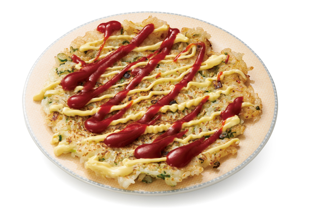
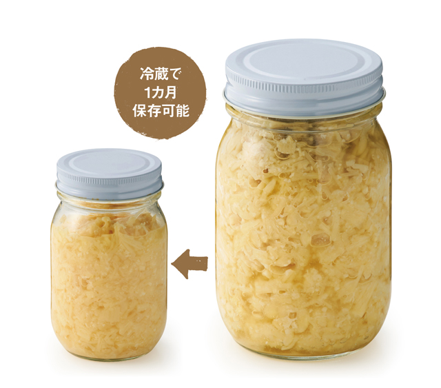

个人日语学习用离线中文版本：毎日が発見。图片已尽量保存为本地路径；未本地化资源见 report.json。
含有关键字“enoki”的文章
1
活的
发布日期：
2026 年 5 月 28 日
只需将其卷起来，拧紧，然后戴上即可！作为疲劳恢复菜单，您应该知道它。
活的
发布日期：
2024 年 4 月 26 日
加上鸡蛋和韭菜，您可以在一道美味佳肴中获得所需的所有营养！ “用肉末鸡肉丸代替”

活的
发布日期：
2019 年 10 月 8 日
制作份量充足的“亲烧”！金针 x 盐曲食谱的 5 个创意

活的
发布日期：
2019 年 10 月 4 日
用β-葡聚糖增强免疫力！易保存调味料“金针盐曲”的制作方法
PAGE TOP
底部横幅
 活的 发布日期：
活的 发布日期：